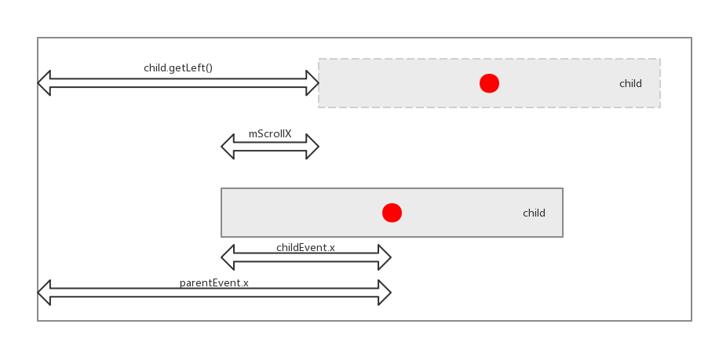

从源码探索事件分发 2
在上一篇里，我们简单地分析了 ViewGroup 的dispatchTouchEvent方法，但这个方法里涉及到的几个其他关键方法还没有搞清楚它们做了什么。另外，View 的事件分发也没有分析，这一篇将会涵盖以上内容。
dispatchTransformedTouchEvent
在 ViewGroup 的dispatchTouchEvent方法里，一共有三个地方调用到了dispatchTransformedTouchEvent方法，而对子 View 以及 ViewGroup 本身的onTouchEvent的调用也是在这个方法里调用的。
第一个调用的地方在这里：
for (int i = childrenCount - 1; i >= 0; i--) {
// ...
if (dispatchTransformedTouchEvent(ev, false, child, idBitsToAssign)) {
// Child wants to receive touch within its bounds.
// ...
}
// ...
}
可见，是在找到了有可能消费这次触摸事件的子 View，因此此时dispatchTransformedTouchEvent的作用是在接受到按下事件的时候将触摸事件分发给该子 View，也就是上面的child。
后面的两次调用在这里：
// Dispatch to touch targets.
if (mFirstTouchTarget == null) {
// No touch targets so treat this as an ordinary view.
handled = dispatchTransformedTouchEvent(ev, canceled, null,
TouchTarget.ALL_POINTER_IDS);
} else {
// Dispatch to touch targets, excluding the new touch target if we already
// dispatched to it. Cancel touch targets if necessary.
TouchTarget predecessor = null;
TouchTarget target = mFirstTouchTarget;
while (target != null) {
final TouchTarget next = target.next;
if (alreadyDispatchedToNewTouchTarget && target == newTouchTarget) {
handled = true;
} else {
final boolean cancelChild = resetCancelNextUpFlag(target.child)
|| intercepted;
if (dispatchTransformedTouchEvent(ev, cancelChild,
target.child, target.pointerIdBits)) {
handled = true;
}
if (cancelChild) {
if (predecessor == null) {
mFirstTouchTarget = next;
} else {
predecessor.next = next;
}
target.recycle();
target = next;
continue;
}
}
predecessor = target;
target = next;
}
}
其中上面的 L4 意味着并没有找到可以消费的子 View，因此我们调用dispatchTransformedTouchEvent将事件分发给了自己，注意这里第三个参数传递的是null，后面我们会看到，这样会把事件发给 ViewGroup 本身。而 L18 意味着在非按下事件的时候，分发后续事件给子 View；如果遇到取消事件或被拦截，也会把取消事件分发给子 View，注意此时cancelChild会为真，后面会看到如果第二个参数为真的话，dispatchTransformedTouchEvent会不考虑该事件的内容就强制分发取消事件。
现在，我们来看看dispatchTransformedTouchEvent的庐山真面目，注意，为了简单起见，下面的代码仍然删掉了和多点触控等相关的语句：
/**
* Transforms a motion event into the coordinate space of a particular child view,
* filters out irrelevant pointer ids, and overrides its action if necessary.
* If child is null, assumes the MotionEvent will be sent to this ViewGroup instead.
*/
private boolean dispatchTransformedTouchEvent(MotionEvent event, boolean cancel,
View child, int desiredPointerIdBits) {
final boolean handled;
// Canceling motions is a special case. We don't need to perform any transformations
// or filtering. The important part is the action, not the contents.
final int oldAction = event.getAction();
if (cancel || oldAction == MotionEvent.ACTION_CANCEL) {
event.setAction(MotionEvent.ACTION_CANCEL);
if (child == null) {
handled = super.dispatchTouchEvent(event);
} else {
handled = child.dispatchTouchEvent(event);
}
event.setAction(oldAction);
return handled;
}
// Calculate the number of pointers to deliver.
final int oldPointerIdBits = event.getPointerIdBits();
final int newPointerIdBits = oldPointerIdBits & desiredPointerIdBits;
// If for some reason we ended up in an inconsistent state where it looks like we
// might produce a motion event with no pointers in it, then drop the event.
if (newPointerIdBits == 0) {
return false;
}
// If the number of pointers is the same and we don't need to perform any fancy
// irreversible transformations, then we can reuse the motion event for this
// dispatch as long as we are careful to revert any changes we make.
// Otherwise we need to make a copy.
final MotionEvent transformedEvent;
if (child == null || child.hasIdentityMatrix()) {
if (child == null) {
handled = super.dispatchTouchEvent(event);
} else {
final float offsetX = mScrollX - child.mLeft;
final float offsetY = mScrollY - child.mTop;
event.offsetLocation(offsetX, offsetY);
handled = child.dispatchTouchEvent(event);
event.offsetLocation(-offsetX, -offsetY);
}
return handled;
}
transformedEvent = MotionEvent.obtain(event);
// Perform any necessary transformations and dispatch.
if (child == null) {
handled = super.dispatchTouchEvent(transformedEvent);
} else {
final float offsetX = mScrollX - child.mLeft;
final float offsetY = mScrollY - child.mTop;
transformedEvent.offsetLocation(offsetX, offsetY);
if (! child.hasIdentityMatrix()) {
transformedEvent.transform(child.getInverseMatrix());
}
handled = child.dispatchTouchEvent(transformedEvent);
}
// Done.
transformedEvent.recycle();
return handled;
}
从方法前面的注释可以看出，这个方法的目的是把相对 ViewGroup 的触摸事件坐标转为子 View 坐标系里的坐标，并分发所需要的事件给子 View。注释说得非常清楚：如果child参数为null，那么事件就分发给 ViewGroup 本身。
首先，如果是取消事件，那么我们当然不用管坐标转换的事情了，因此我们直接分发给子 View 或本身：
// Canceling motions is a special case. We don't need to perform any transformations
// or filtering. The important part is the action, not the contents.
final int oldAction = event.getAction();
if (cancel || oldAction == MotionEvent.ACTION_CANCEL) {
event.setAction(MotionEvent.ACTION_CANCEL);
if (child == null) {
handled = super.dispatchTouchEvent(event);
} else {
handled = child.dispatchTouchEvent(event);
}
event.setAction(oldAction);
return handled;
}
注意，当child为null的时候，我们调用的是super.dispatchTouchEvent，因为我们此时需要把这个 ViewGroup 当作一个 View 来看，如果这里直接调用dispatchTouchEvent的话，会直接调用到前面的dispatchTouchEvent，会进入无限的循环调用。
由于我们只考虑单点触摸，因此oldPointerIdBits == newPointerIdBits，从注释看，我们接下来需要考虑是否需要构造一个新的 MotionEvent 对象用于分发：
// If the number of pointers is the same and we don't need to perform any fancy
// irreversible transformations, then we can reuse the motion event for this
// dispatch as long as we are careful to revert any changes we make.
// Otherwise we need to make a copy.
final MotionEvent transformedEvent;
if (child == null || child.hasIdentityMatrix()) {
if (child == null) {
handled = super.dispatchTouchEvent(event);
} else {
final float offsetX = mScrollX - child.mLeft;
final float offsetY = mScrollY - child.mTop;
event.offsetLocation(offsetX, offsetY);
handled = child.dispatchTouchEvent(event);
event.offsetLocation(-offsetX, -offsetY);
}
return handled;
}
transformedEvent = MotionEvent.obtain(event);
可以猜到，child.hasIdentityMatrix这个方法就可以决定子 View 是否会发生“fancy irreversible transformations”（我把它翻译为“骚气的不可逆转换”），如果会的话我们就需要构造一个新的 MotionEvent 对象给子 View 以避免我们原来的对象被改变。但是这里我们会发现hasIdentityMatrix这个方法最终调用了一个 native 函数，而且和图形渲染有关，因此这里暂时没有办法解释为什么这样的判断是可以的，如果有读者明白，欢迎在评论区交流。
在可以直接分发当前 MotionEvent 对象的前提下：在child为null的时候，我们仍然分发给本身。否则，我们计算被转换的坐标，改动event里的坐标之后分发给子 View，分发完成后还会将坐标偏移回来。具体的偏移计算方法在上面的代码中，我就不详细解析了，给出一张图给读者理解：

上图中parentEvent就是当前 ViewGroup 得到的事件对象，childEvent就是需要分发给子 View 的事件对象。
在需要构造新的 MotionEvent 的时候，后面的语句和前面的几乎一致，只是事件对象变成了新构造的transformedEvent，并且最后对它进行了回收释放。
至此，我们就搞清楚了dispatchTransformedTouchEvent如何把事件分发给自己或子 View 的了。
cancelAndClearTouchTargets
上次提到，mFirstTouchTarget是能消费触摸事件的对象的链表，其实只要看看addTouchTarget、getTouchTarget和cancelAndClearTouchTargets的代码就能一下看出来，所以这里不贴它们的代码，读者有兴趣的话可以亲自看看。
resetTouchState
在准备分发最开始的按下事件的时候，这个方法会被调用，用于重置一些状态，代码如下：
/**
* Resets all touch state in preparation for a new cycle.
*/
private void resetTouchState() {
clearTouchTargets();
resetCancelNextUpFlag(this);
mGroupFlags &= ~FLAG_DISALLOW_INTERCEPT;
mNestedScrollAxes = SCROLL_AXIS_NONE;
}
clearTouchTargets里只是清空了mFirstTouchTarget链表而已，这里我们又看到了resetCancelNextUpFlag，看来我们后面必须搞清楚它。这里同时把禁止拦截的 flag 给关闭了，重置了嵌套滑动的状态。
getAndVerifyPreorderedIndex
这个方法的目的在于获取子 View 接受触摸事件的顺序，因为 ViewGroup 可能会有重叠的 View，而在这种情况下开发者可以继承 ViewGroup 并重写getChildDrawingOrder来人为改变子 View 的绘制顺序，因此我们可以看到，这个方法里会获得第i个子 View 的绘制顺序：
private int getAndVerifyPreorderedIndex(int childrenCount, int i, boolean customOrder) {
final int childIndex;
if (customOrder) {
final int childIndex1 = getChildDrawingOrder(childrenCount, i);
if (childIndex1 >= childrenCount) {
throw new IndexOutOfBoundsException("getChildDrawingOrder() "
+ "returned invalid index " + childIndex1
+ " (child count is " + childrenCount + ")");
}
childIndex = childIndex1;
} else {
childIndex = i;
}
return childIndex;
}
可见，在customOrder为真的时候，该方法会得到自定义的绘制顺序，并做一下越界检查（这也是为什么方法名字含有“verify”），否则直接返回i。
getAndVerifyPreorderedView
和上一个方法类似，这个方法也会根据情况获得相对应的子 View：
private static View getAndVerifyPreorderedView(ArrayList<View> preorderedList, View[] children, int childIndex) {
final View child;
if (preorderedList != null) {
child = preorderedList.get(childIndex);
if (child == null) {
throw new RuntimeException("Invalid preorderedList contained null child at index " + childIndex);
}
} else {
child = children[childIndex];
}
return child;
}
和前面不一样的是，这里不再判断customOrder，而是直接判断第一个参数是否为null，换句话说，如果没有启用自定义的绘制顺序，这个方法被调用的时候第一个参数就会是null。
buildTouchDispatchChildList
这个方法名字非常奇怪，但是我们看看被调用的地方：
// Find a child that can receive the event.
// Scan children from front to back.
final ArrayList<View> preorderedList = buildTouchDispatchChildList();
显然，这个方法会获取根据需要（绘制顺序、Z 轴属性等）排列的子 View。接下来我们看看这个方法：
/**
* Provide custom ordering of views in which the touch will be dispatched.
*
* This is called within a tight loop, so you are not allowed to allocate objects, including
* the return array. Instead, you should return a pre-allocated list that will be cleared
* after the dispatch is finished.
* @hide
*/
public ArrayList<View> buildTouchDispatchChildList() {
return buildOrderedChildList();
}
上面的注释值得注意，什么是“tight loop”？根据terminology - What is a “tight loop”? - Stack Overflow这个帖子的解释，这种循环会被调用很频繁，这就意味着我们不能在这个方法里构造对象，否则会非常影响性能；而且需要在用完之后清空列表，原因我们在buildOrderedChildList的注释里可以得到回答：
/**
* Populates (and returns) mPreSortedChildren with a pre-ordered list of the View's children,
* sorted first by Z, then by child drawing order (if applicable). This list must be cleared
* after use to avoid leaking child Views.
*
* Uses a stable, insertion sort which is commonly O(n) for ViewGroups with very few elevated
* children.
*/
ArrayList<View> buildOrderedChildList() {
final int childrenCount = mChildrenCount;
if (childrenCount <= 1 || !hasChildWithZ()) return null;
// ...
}
从注释看，返回的列表如果不及时清除，就会泄漏子 View 对象，可能会引起 GC 导致的性能下降。注意，查看源码就能发现 ArrayList 的clear方法是不会改变其占用的内存的，只是将每个元素都置为null，因此也不会引起多次重新分配对象（allocate objects）。
上面的方法的作用就显而易见了，如果子 View 的数量不多于1或者没有一个子 View 有自定义的 Z 轴的话，就直接返回null，这里就有些奇怪了：即使启用了自定义绘制顺序，如果子 View 全部都用默认的 Z 值（0）的话，事件就仍然不会按照自定义的绘制顺序分发了吗？非也非也，事实上，这个buildOrderedChildList得到的排序是综合自定义绘制顺序和 Z 值的，从注释就看的出来，优先按照 Z 值排序，然后按照绘制顺序，那么如果所有 Z 值都为 0，我们来看看这个返回的null会在dispatchTouchEvent里造成什么影响：
final ArrayList<View> preorderedList = buildTouchDispatchChildList();
final boolean customOrder = preorderedList == null
&& isChildrenDrawingOrderEnabled();
final View[] children = mChildren;
for (int i = childrenCount - 1; i >= 0; i--) {
final int childIndex = getAndVerifyPreorderedIndex(
childrenCount, i, customOrder);
final View child = getAndVerifyPreorderedView(
preorderedList, children, childIndex);
// ...
我来给读者捋一下逻辑：如果子 View 不止 1 个，而且启用了自定义绘制顺序，而且有子 View 的 Z 值非 0，那么我们会得到综合了 Z 值和绘制顺序的preorderedList，此时上面的customOrder反而是否，为什么呢？因为此时我们已经拿到排好序的列表了，所以上面代码 L6 的childIndex就会等价于i，所以 L8 的child也会等价于preorderedList[i]，换句话说，这就变成了依次遍历已经排好序的子 View 了，正是我们想要的结果，实在巧妙！而如果所有子 View 的 Z 值都是 0，那么customOrder也等价于是否启用了自定义绘制顺序，后面的遍历也会顺利地按照自定义绘制顺序获取子 View。
现在我们回到buildOrderedChildList方法，正如注释所说，这个方法准备好 ArrayList 之后，使用插入排序将 Z 值大但绘制顺序相对小的子 View 往前提：
if (mPreSortedChildren == null) {
mPreSortedChildren = new ArrayList<>(childrenCount);
} else {
// callers should clear, so clear shouldn't be necessary, but for safety...
mPreSortedChildren.clear();
mPreSortedChildren.ensureCapacity(childrenCount);
}
final boolean customOrder = isChildrenDrawingOrderEnabled();
for (int i = 0; i < childrenCount; i++) {
// add next child (in child order) to end of list
final int childIndex = getAndVerifyPreorderedIndex(childrenCount, i, customOrder);
final View nextChild = mChildren[childIndex];
final float currentZ = nextChild.getZ();
// insert ahead of any Views with greater Z
int insertIndex = i;
while (insertIndex > 0 && mPreSortedChildren.get(insertIndex - 1).getZ() > currentZ) {
insertIndex--;
}
mPreSortedChildren.add(insertIndex, nextChild);
}
return mPreSortedChildren;
canViewReceivePointerEvents
这个方法和下一个方法都是用于判断子 View 有没有机会消费触摸事件的，看看这个方法的源码：
/**
* Returns true if a child view can receive pointer events.
* @hide
*/
private static boolean canViewReceivePointerEvents(@NonNull View child) {
return (child.mViewFlags & VISIBILITY_MASK) == VISIBLE
|| child.getAnimation() != null;
}
容易看出，子 View 只要可见或者有动画，就能够接受触摸事件，这是因为这个 View 虽然暂时不可见（这里指的是getVisibility != View.VISIBLE），但是可能正在播放动画，比如淡入动画。
isTransformedTouchPointInView
这个方法则是保证触摸坐标落在了这个子 View 里面：
/**
* Returns true if a child view contains the specified point when transformed
* into its coordinate space.
* Child must not be null.
* @hide
*/
protected boolean isTransformedTouchPointInView(float x, float y, View child,
PointF outLocalPoint) {
final float[] point = getTempPoint();
point[0] = x;
point[1] = y;
transformPointToViewLocal(point, child);
final boolean isInView = child.pointInView(point[0], point[1]);
if (isInView && outLocalPoint != null) {
outLocalPoint.set(point[0], point[1]);
}
return isInView;
}
上面的transformPointToViewLocal我就不贴代码了，其实和前面分发事件的时候转换坐标是一样的道理，读者可以自己查看。
resetCancelNextUpFlag
终于到这货了！我们查阅代码，发现它在把一个 flag 复位，这个 flag 叫：PFLAG_CANCEL_NEXT_UP_EVENT，而这个 flag 是 View 里面定义的，直接看名字的话，这个 flag 表示是否要取消掉接下来的EVENT_UP事件，我们看看这个 flag 的注释：
/**
* Indicates whether the view is temporarily detached.
*
* @hide
*/
static final int PFLAG_CANCEL_NEXT_UP_EVENT = 0x04000000;
它说的是这个 View 是否被临时从 View 树中摘掉了，我们接着看，搜索这个 flag 被用到的地方，一共三处，第一处：
/**
* Performs button-related actions during a touch down event.
*
* @param event The event.
* @return True if the down was consumed.
*
* @hide
*/
protected boolean performButtonActionOnTouchDown(MotionEvent event) {
if (event.isFromSource(InputDevice.SOURCE_MOUSE) &&
(event.getButtonState() & MotionEvent.BUTTON_SECONDARY) != 0) {
showContextMenu(event.getX(), event.getY());
mPrivateFlags |= PFLAG_CANCEL_NEXT_UP_EVENT;
return true;
}
return false;
}
这就很尴尬了……说好的从 View 树摘掉呢？？？我猜测这个方法是后来才加上的，而前面对 flag 的注释是之前就写上的……从上面的方法看，当我们正在触摸这个 View 的时候，如果用鼠标（对，鼠标）对这个 View 按了右键，那我们得弹出上下文菜单，显然，这个时候松开手指也不能触发按钮的 click 事件啊！于是，我们看到上面把这个 flag 立了起来。
第二个地方：
/**
* This is called when a container is going to temporarily detach a child, with
* {@link ViewGroup#detachViewFromParent(View) ViewGroup.detachViewFromParent}.
* It will either be followed by {@link #onFinishTemporaryDetach()} or
* {@link #onDetachedFromWindow()} when the container is done.
*/
public void onStartTemporaryDetach() {
removeUnsetPressCallback();
mPrivateFlags |= PFLAG_CANCEL_NEXT_UP_EVENT;
}
可见，如果我们手动从 View 树摘掉这个 View，那么这个 View 就该取消掉手指抬起事件了。
第三个地方比较复杂，是在 View 被从 Window 移除之后调用的，并且复位了这个 flag：
/**
* This is a framework-internal mirror of onDetachedFromWindow() that's called
* after onDetachedFromWindow().
*
* If you override this you *MUST* call super.onDetachedFromWindowInternal()!
* The super method should be called at the end of the overridden method to ensure
* subclasses are destroyed first
*
* @hide
*/
@CallSuper
protected void onDetachedFromWindowInternal() {
mPrivateFlags &= ~PFLAG_CANCEL_NEXT_UP_EVENT;
// ...
}
这里我的理解是，移除之后重置一下状态，如果有读者知道其目的，可以在评论区交流。
到这里我们就知道了，这个 flag 在某些情况下会被立起来，目的是取消后续的抬起事件，那么我们在resetTouchState里为什么要复位也可以理解了：开始新一波触摸事件之后，之前如果没有复位的话当然就要复位了，否则这次事件也会被这个 flag 影响的！既然如此，我们顺便看看这个 flag 怎么影响我们的事件分发，回到 ViewGroup，两处用到了resetCancelNextUpFlag的返回值，首先是dispatchTouchEvent的这里：
// Check for cancelation.
final boolean canceled = resetCancelNextUpFlag(this)
|| actionMasked == MotionEvent.ACTION_CANCEL;
没错，如果我们把这个 flag 立起来了，那么我们会得到canceled == true，也就是说，如果发生了前面所说的，按下按钮的时候又点击鼠标右键，那么我们在这里就会判定这个 ViewGroup 需要取消事件，最终我们会分发一个EVENT_CANCEL给这个 ViewGroup。其实，与此同时我们的这个 flag 也会被复位，因此代码里多处调用，只是为了保证意外吧。第二个地方也在dispatchTouchEvent里，不过这次轮到了子 View：
if (alreadyDispatchedToNewTouchTarget && target == newTouchTarget) {
handled = true;
} else {
final boolean cancelChild = resetCancelNextUpFlag(target.child)
|| intercepted;
// ...
}
这里就不再解释了。
View 的事件分发
比起 ViewGroup，View 的事件分发就简单多了，除杂后的代码如下：
/**
* Pass the touch screen motion event down to the target view, or this
* view if it is the target.
*
* @param event The motion event to be dispatched.
* @return True if the event was handled by the view, false otherwise.
*/
public boolean dispatchTouchEvent(MotionEvent event) {
boolean result = false;
final int actionMasked = event.getActionMasked();
if (actionMasked == MotionEvent.ACTION_DOWN) {
// Defensive cleanup for new gesture
stopNestedScroll();
}
if ((mViewFlags & ENABLED_MASK) == ENABLED && handleScrollBarDragging(event)) {
result = true;
}
//noinspection SimplifiableIfStatement
ListenerInfo li = mListenerInfo;
if (li != null && li.mOnTouchListener != null
&& (mViewFlags & ENABLED_MASK) == ENABLED
&& li.mOnTouchListener.onTouch(this, event)) {
result = true;
}
if (!result && onTouchEvent(event)) {
result = true;
}
// Clean up after nested scrolls if this is the end of a gesture;
// also cancel it if we tried an ACTION_DOWN but we didn't want the rest
// of the gesture.
if (actionMasked == MotionEvent.ACTION_UP ||
actionMasked == MotionEvent.ACTION_CANCEL ||
(actionMasked == MotionEvent.ACTION_DOWN && !result)) {
stopNestedScroll();
}
return result;
}
我们首先看到，如果是新的触摸按下事件，我们会停下嵌套滑动：
final int actionMasked = event.getActionMasked();
if (actionMasked == MotionEvent.ACTION_DOWN) {
// Defensive cleanup for new gesture
stopNestedScroll();
}
如果我们是拖动滚动条（这些应该是另外一套处理机制了），我们也认为我们已经消费了事件：
if ((mViewFlags & ENABLED_MASK) == ENABLED && handleScrollBarDragging(event)) {
result = true;
}
接下来，在 View 启用（enabled）的时候，如果有触摸监听器，我们会触发对应的回调：
ListenerInfo li = mListenerInfo;
if (li != null && li.mOnTouchListener != null
&& (mViewFlags & ENABLED_MASK) == ENABLED
&& li.mOnTouchListener.onTouch(this, event)) {
result = true;
}
如果回调为真，我们也认为消费了事件。
如果我们的onTouch返回真，那么我们的onTouchEvent就不会被调用，这从后面的代码容易看出：
if (!result && onTouchEvent(event)) {
result = true;
}
最后，如果我们取消了事件，或者抬起了手，或者我们没有（不想）消费这个事件，那么我们也要把嵌套滑动停下来：
// Clean up after nested scrolls if this is the end of a gesture;
// also cancel it if we tried an ACTION_DOWN but we didn't want the rest
// of the gesture.
if (actionMasked == MotionEvent.ACTION_UP ||
actionMasked == MotionEvent.ACTION_CANCEL ||
(actionMasked == MotionEvent.ACTION_DOWN && !result)) {
stopNestedScroll();
}
总结
到这里，我们已经窥探了 ViewGroup 和 View 的事件分发源码，从源码上知道了事件如何在视图树中分发，也意外发现了很多坑，比如上面提到的，设置了 OnTouchListener 之后，onTouchEvent就会失效了。如果这个系列还有后文，那大概是对我们精简掉的部分：多点触控、无障碍处理进行源码级分析了。
如果你看到这里，还没有晕，看懂了，那说明我的写作水平还是可以的这怎么可能呢: )